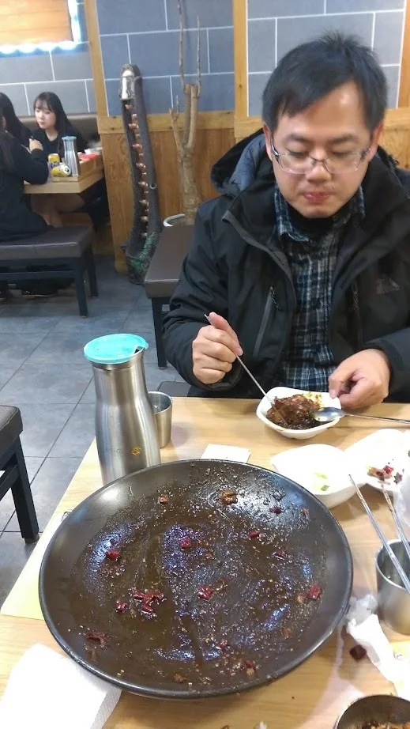
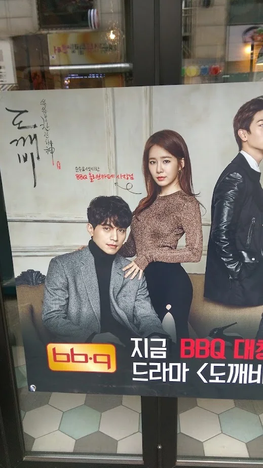
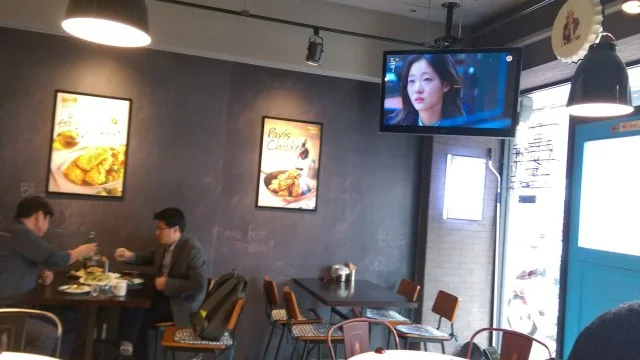
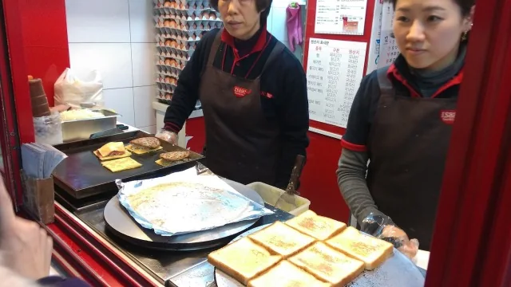
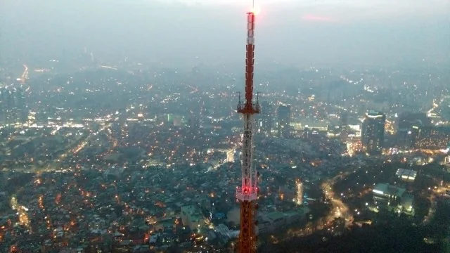
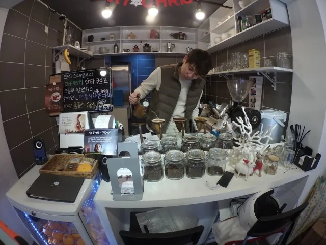
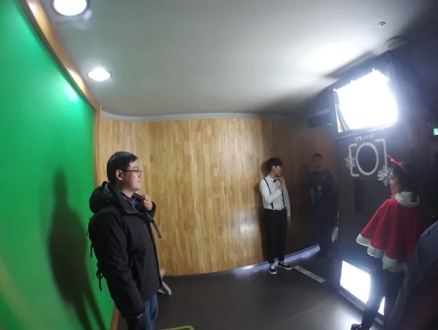

2016 首爾聖誕（中）：宮闕、市場與街頭散步

👈 回顧上篇：2016 首爾聖誕紀錄（上）：初抵與校園散策



繼續 2016 首爾聖誕紀錄。
低溫加下雨的好處，就是人超少的在昌德宮（Changdeokgung）。沒等到雪的第二天。Let’s go Secret Garden 在昌德宮後苑，朴寶劍出生的地方。
下雪了，這是在景福宮（Gyeongbokgung）。歷經中大雪欸，在光化門。
本行第一家咖啡在 Ediya Coffee 安國。炒血腸配上燒滾滾牛肉湯。好久沒吃綠豆煎餅在廣藏傳統市場。
📌 **廣藏市場的庶民滋味**
身為首爾歷史最悠久的傳統市場，廣藏市場的綠豆煎餅（빈대떡）是用石磨現磨綠豆泥下鍋半煎半炸而成。在下著雪或冷雨的冬日，站在攤子前吃一塊熱騰騰、邊緣酥脆的煎餅，是首爾最具代表性的味覺記憶。
補喝咖啡的行程在東大門。我的左膝蓋需要維骨力，在新村八色五花肉。為什麼要排隊勒，台灣依舊沒吃過。
Stark, I’m a little busy。Merry Christmas。自體發電。



韓國比非多在宣陵站（Seolleung Station）。有點霧茫茫的首爾塔，在 N Seoul Tower。聽說是午夜場彌撒在明洞聖堂，又來參拜了。
在想晚餐要吃啥，在新世界百貨店。24小時真是福音，晚餐時刻。
今日導覽團，逛街行程在仁寺洞。顏色真的很好看啊，台灣花燈登登登，在曹溪寺。很多人圍著樹繞著摸，祈求長壽。

放飯時間在永登浦 Times Square。南瓜冰沙我來啦，佳節購買力。
👉 繼續閱讀：2016 首爾聖誕紀錄（下）：爆買、美食與歸途
READING PATH / 從這篇出發
把故事接起來讀
首爾 2016 聖誕：短記與多年後的回看
並置 2016 年的短記、宮闕文章，以及後來整理的上、中、下篇。2015 年聖誕旅程另屬不同一次旅行。
- 前一段多年後整理（上）｜初抵與校園散策
由機場、梨大與新村出發，接上同一趟旅程的中、下篇。
- 下一段多年後整理（下）｜美食、採買與歸途
接著讀同一回顧的尾聲；顯示名稱依正文整理。